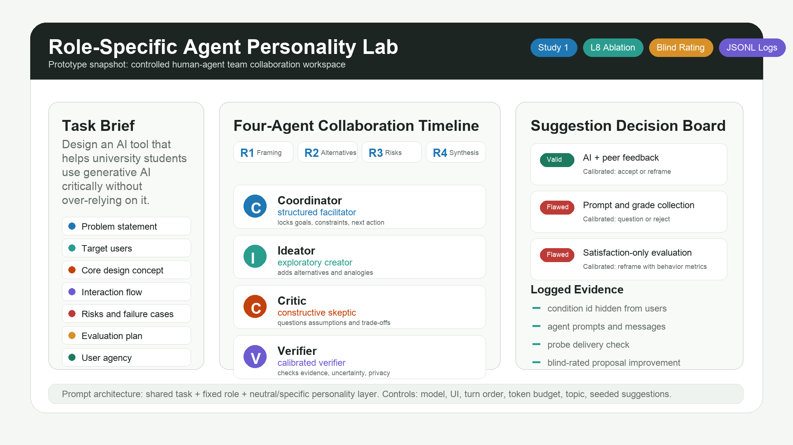

Coordinator
Structured facilitatorTracks goals, orders work into steps, summarizes options, and proposes concrete next actions.
Class progress report | CHI-oriented experiment prototype
A within-subjects study of whether giving each agent in a team a role-specific personality helps a person produce better work — and what it costs the experience.
In a human-agent team, an agent's personality is not decoration. It is a role-specific collaboration signal: it tells the person what each agent is for, when to lean on it, and when to push back.
LLM systems are moving from a single assistant to a team of agents. When a person collaborates with several AI voices at once, a new design question appears: should each agent's personality match its role, or should the team speak in one neutral voice? We test this head-to-head inside the same person.
Compared with a neutral-personality team, does a role-specific team improve blind-rated proposal quality and the person's calibrated reliance — accepting good advice, rejecting or questioning flawed advice?
How does role-specific personality change role legibility, cognitive load, constructive conflict, perceived pressure, and autonomy — and what trade-offs come with it?
The expected story is not "personality makes everything better." It is a role-specific trade-off: output and calibrated reliance go up, possibly at the cost of higher perceived pressure. A result with both gains and costs is more credible and harder to dismiss.
To stay defensible, the study uses a narrow, operational definition and explicitly separates personality from role, expertise, identity, and capability. Personality is the only thing that changes between the two arms.
| Concept | Definition in this study | Manipulated? |
|---|---|---|
| Role | What the agent is responsible for in the team. | No — identical in both arms |
| Expertise | What domain knowledge the agent holds. | No — held constant |
| Personality | A stable, perceivable behavioral style in language. | Yes — the only variable |
| Persona identity | Who the agent appears to be (age, gender, avatar, biography). | No — never used |
| Capability | How well the agent performs (accuracy, reasoning). | No — same model, budget, length monitored |
We do not claim LLM agents "have" human personality. We study the perception and behavioral consequences of designed personality expressions attached to collaborative roles. Big-Five-informed behavioral axes ground the design without claiming the agents possess Big-Five traits.
Each role keeps the same function in both arms. The role-specific arm amplifies a role-congruent behavioral stance; the neutral arm keeps the same role in a flat, distinguishable-but-un-amplified voice.
Tracks goals, orders work into steps, summarizes options, and proposes concrete next actions.
Broadens the design space through alternatives, analogies, edge cases, and concrete interaction ideas.
Questions unsupported assumptions, surfaces trade-offs and failure cases, without hostility.
Marks uncertainty, requests evidence, checks privacy and ethics, and improves evaluation rigor.
Every agent prompt has three layers: a shared task instruction, a role instruction, and a personality instruction. Only the personality layer changes between arms — the defense against the "this is just prompt engineering" critique.
We expect to recruit at most ~20 participants. A between-groups design at that size has almost no power. So each participant experiences both teams and becomes their own control — the standard move for a small-sample controlled study.
Team personality = {neutral, role-specific}. Each participant does two collaboration blocks, one per arm.
Each block uses a different but difficulty-matched design brief, so repeating the same task does not cause practice or boredom effects.
Role, count, expertise, orchestration, turn order, model, token budget, and UI are identical across the two arms.
| Sequence | Block 1 | Block 2 | Balances |
|---|---|---|---|
| S1 | Neutral + Topic A | Specific + Topic B | arm order |
| S2 | Specific + Topic A | Neutral + Topic B | arm order |
| S3 | Neutral + Topic B | Specific + Topic A | arm–topic mapping |
| S4 | Specific + Topic B | Neutral + Topic A | arm–topic mapping |
Assigned round-robin by intake order, these four sequences balance arm order, topic, and the arm–topic pairing — so the arm effect is not confounded with "which block came first" or "which topic was harder."
One ~50–60 minute session. The flow threads the manipulation through two parallel blocks, captures each person's starting point, and ends with a head-to-head comparison and a mandatory debrief.
AI familiarity, trust, skepticism, domain familiarity, creative self-efficacy, attention check.
Writes a structured proposal for topic 1 before meeting the team (≥280 chars gate).
Role tutorial, then 3 orchestrated rounds + free directed questions. Seeded suggestions appear in rounds 2–3.
Submits the final proposal (≥480 chars), handles every decision-board suggestion, rates the block.
Repeats draft → collaborate → final → survey with the other arm and the other topic (no tutorial repeat).
Head-to-head preference between the two blocks, then a mandatory debrief revealing the seeded flawed suggestions.
Inside each block, the orchestration is fixed: Round 1 problem framing, Round 2 solution alternatives, Round 3 risks and evaluation — Coordinator → Ideator → Critic → Verifier each round. The participant can also @-direct any single agent or the whole team, so we can see whom they trust, ask, and push back on.
The study does not rely on satisfaction. It combines blind-rated proposal improvement, a behavioral measure of calibrated reliance, and per-block experience scales — all read as within-person paired differences.
Three blind raters score each initial and final proposal as anonymous single items — never seeing the arm, topic mapping, participant, or whether the item is a first or final draft. The outcome is final-minus-initial quality, per block.
Each block embeds four matched seeded suggestions (2 valid, 2 flawed). The decision board logs accept / reject / question / reframe. Calibration = handling that matches each suggestion's true validity.
Compare AI feedback with a second source. Calibrated handling: accept or adapt.
Collect prompts / documents / grades by default. Calibrated handling: question or reject on privacy grounds.
Judge success by satisfaction alone. Calibrated handling: reframe with behavioral / decision-quality measures.
A flaw is never voiced by the role responsible for catching it (privacy flaw never from the Verifier, evaluation flaw never from the Critic), so probe visibility cannot vary with the manipulation. The server verifies each suggestion was delivered verbatim; undelivered probes are dropped from that participant's calibration score.
NASA-TLX short: mental demand, time pressure, effort, frustration.
Could tell each agent's job, knew whom to ask, could read disagreements, style fit role.
Felt pushed, too forceful, could reject freely, final proposal still mine.
Per-block ratings that each role read as structured / exploratory / skeptical / calibrated.
The unit of analysis is the within-person difference: each participant's role-specific block minus their neutral block. We report effect sizes with confidence intervals, not a single p-value threshold.
For every outcome, compute each participant's (specific − neutral) difference. The four primary tests: proposal improvement, calibrated reliance (strict), role legibility, perceived pressure.
Report the mean paired difference, paired Cohen's dz, a bootstrap 95% CI, and a Wilcoxon signed-rank test (robust at small N; paired t as a sensitivity check).
Mixed model Rating ~ Stage*Arm + Topic + (1|Participant) + (1|Rater); order effect, response-length parity, manipulation check, and fallback audit.
Strict (confirmatory): reframe counts only for flawed suggestions; valid requires outright acceptance — so "reframe everything" cannot score as perfectly calibrated. Lenient runs as a sensitivity analysis.
Thematic analysis of open responses and decision-board notes — which role people most wanted to tune, pressure moments, decision moments — feeding RQ2's cost narrative and design guidance.
Hypotheses: H1 improvement and H2 calibrated reliance higher in the role-specific arm; H3 role legibility higher; H4 perceived pressure higher (the cost). The dashboard already renders paired means, Cohen's dz, the manipulation check, probe decisions, and length parity live as data arrives.
The experiment is implemented as a recruit-ready web-based human-agent team workspace — participant flow, agent orchestration, full logging, blind rating, and a within-subjects analytics dashboard — not a chat demo.

React + TypeScript + Vite; Express backend; JSONL event log under data/.
Three-layer prompts; only the personality layer changes between arms. Arm never sent to the client.
Arm-aware fallback, verbatim probe-delivery verification, response-length parity monitor.
Paired contrasts, Cohen's dz, manipulation check, blind-rating coverage and reliability, CSV exports.
Role-specific agent personality as a team-level, assignable, controllable collaboration mechanism — not single-agent style.
Within-subjects paired estimates of how role-specific personality affects output, calibrated reliance, and experience — costs included.
A reusable small-sample protocol: layered prompts, paired A/B, blind improvement, matched probes, delivery verification, manipulation check.